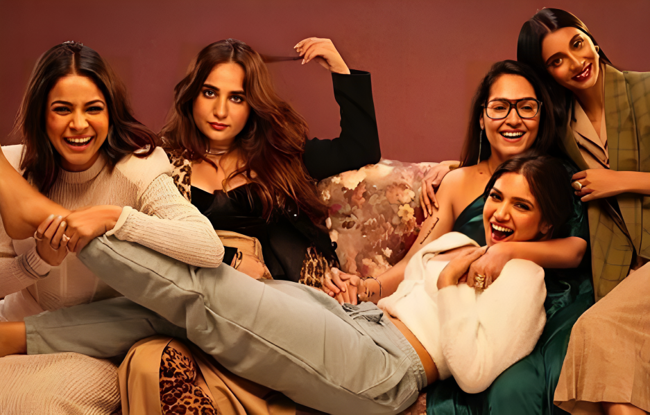

- Khushi Japee
The Writer’s Strike happening in the United States
had taken over my Instagram
feed for weeks, and that’s saying something considering
news moves on and off that app
quicker than anything your eyes
have seen. Of course, the more
I saw it being mentioned, the
more curious I got. A strike? For
writers? What exactly were they
being deprived of to call for a
strike? Turns out it was worse
than a lot of us thought.
The recent Writer’s Strike took
place from May 2 till Sept. 27
and with it came a lot of changes for the entertainment industry. With 148 continuous days
of strike, what did the Writers of
America want from the companies?
The strike officially started
with the AMPTP, the Alliance of
Motion Picture and Television
Producers, refusing to negotiate
and come to even ground with
the terms proposed. Some of the
key terms were: AI can’t be used
to write scripts, better streaming residuals and transparency
regarding numbers, increased
minimum rates for writers, and
minimum staffing for TV writers’ rooms.
In August, WGA revealed
how AMPTP indicated a “willingness to make concessions
in some areas” regarding safeguarding writers from AI technology. However, in the same
line, some studios were said
to not be willing to engage on
other proposals, including success-based residual payments.
This back and forth is what
dragged on the strike for 148
days.
It’s quite obvious that the situation was disadvantageous to
writers. The success-based payments sound like the most logical lane to head down, yet for
some reason studios refused to
settle with anything other than
paying writers an unlivable
wage. It becomes quite ironic to
look at, considering shows exist due to their writing and any
reaction elicited from viewers
is major because of the writing,
yet these same writers are paid
dust bunnies and expected to
not complain about it.
It gets worse when you look
at the statistics. The wages given for writers working at MBA,
Minimum Basic Agreement,
has increased by 12% over ten
years, compared to the 49%
seen for Co-Producers. How is
it that a group of people contributing so heavily to the existence
is still getting such a proportionally low amount? The more you
learn about the circumstances
that writers were working with,
the more the strike seems inevitable. This isn’t the first time a
writer’s strike has happened, in
fact, this is the second longest
strike that the country has witnessed. The longest labour stoppage was in 1988 when WGA
went on strike for 153 days.
The fact that history has repeated itself says enough about
the importance and weight that
writers are given in the creative
field. They deserve contracts
that benefit them, wages that
allow them to hold a decent
standard of living and protection from rapidly developing
technology that threatens to
take away their jobs. The Writer’s Strike tells us one important
thing, writers are necessary and
they need to be protected. And
they will fight every single time
companies try to give them any
less.
- Samhita Vasisht
If someone were to seek my opinion on whether it’s wise to spend
on the new iPhone 15, I’d swiftly deliver a confident “NO.” Nevertheless, I’d have to be cautious to ensure that my generous father,
the man who so kindly financed my own iPhone 15, remains blissfully unaware of my somewhat unflattering viewpoint. After all, I
don’t want to come across as condescending.
The iPhone 15 - it’s like the sequel to Salman Khan’s ‘Tiger’
movie, no one asks for it, but we still do get them with just a few
tweaks and changes. While, some folks are grumbling about its
back glass, which has the durability of a pappad and heats up faster
than a popcorn bag in a microwave. Some sing its praises, raving
about the camera features and USB-C type charging port.
But let’s not give Apple all the credit for the charging port yet.
Apple didn’t suddenly have a eureka moment and decided to embrace the universal USB-C connector. Nope, they were nudged in
the right direction by the European Union (EU). It’s like being told
to clean your room; you do it because you have to, not because
you want to. The EU rules require all smartphones and electronic
devices to have a USB-C port by the end of 2024. So, Apple had
no choice but to bend into it.
Apple fans are like the “no matter what I’ll buy it, it’s apple”
crowd. You could sell them an Apple-branded rock, and they’d
claim it’s a meteoroid.
After all, it is hypocritical of me to say all of this while I still
own one.
- Avni Shetty
- Khushi Japee
Urban legends are considered
a genre of modern folklore that
usually consist of rare and exceptional events. They are stories told as true, and possible
enough to be believed and are
usually about an exceptional
event that happened to a real
person or in a real place. These
stories are rooted in historical
facts, describing adventures of
people who once actually lived,
but whose adventures have been
greatly exaggerated through the
passage of time.
Rajasthan:
Kuldhara village in Rajasthan
was abandoned overnight, leaving behind a shambles of homes
and buildings. According to legend, the monarch of the territory fell in love with the daughter
of the subjugated village leader,
and in order to avoid shame,
the entire village of 1500 vanished overnight. According to
legend, the village chief cursed
the abandoned village in such
a way that anyone who tried to
live there would perish.
Karnataka:
In the 1990s, there were stories
of a witch wandering the streets
late at night, knocking on doors
and calling out to victims in
the voice of their mother. The
individual died if the door was
answered. The solution was
to put “Nale ba” on the door,
which means “come tomorrow,” implying that the witch
would return the next day, see
the sign, and the cycle would
continue. The 2018 Bollywood
film ‘Stree’, starring Shraddha
Kapoor and Rajkumar Rao,
is based on the Naale Baa tale
from Karnataka.
Delhi:
The forested area outside of
Delhi is famous for its ancient
and twisty banyan trees. Hikers have reported witnessing a
woman dressed in white, wandering among the banyan trees
before disappearing.
Assam:
Many years ago, Jatinga in Assam, garnered news due to bird
suicides, and many people associated it with the supernatural.
For those who are unfamiliar
with Jatinga’s Bird Suicide,
birds come soaring at night and
drop dead on the ground every
year from September to November. For many years, residents
and those who heard about it
through word of mouth treated
it as an otherworldly event, attracting numerous researchers
from throughout the world.
The world of urban legends is
a place where reality and fantasy collides, blurring the line between the two. While scepticism
and critical thinking are useful
skills for separating facts from
fiction, urban legends’ allure
lies in their ability to stimulate
our curiosity and spur discussion. In the end, it’s up to each
person to choose whether to
embrace the magic and mystery
of urban legends or to approach
them with more scepticism.
- Nanditha Gururaj
 Bollywood’s attempts at sex comedies, which explore women’s desires, have always had to navigate a tricky audience, especially with the subjects they approach. If you have seen similar movies/series such as ‘Lipstick Under My Burkha’ and ‘Four More Shots Please’, you’ll know what I am talking about. And that is exactly why ‘‘Thank you for Coming’ turns out to be an interesting watch, to say the least. Sex comedies can be a revolutionary genre— especially in a country like India, where sex is considered as a taboo subject. However, this film doesn’t start any revolutions; in fact, there’s a series of jumbled repetition of feminist clichés to make one cringe at best and feel pompous at worst. The Karan Boolani directed movie stars Bhumi Pednekar as Kanika Kapoor, the protagonist who well into her 30s, desperately searches for an orgasm. Natasha Rastogi, Kanika’s single mother, chose to have her daughter as an unmarried woman. However, Kanika does not want to follow in her mother’s footsteps and finds herself on a man-hunt throughout her entire life. The film admittedly had its funny moments, as is expected of the cast it contains, such as Anil Kapoor playing Kanika’s older ex-boyfriend, her fiancé Jeevan Anand (whose name is literally translated to Life Insurance Policy) and Shehnaz Gill’s witty desi one-liners. The film’s issues lie within its script, which introduces strange plot twists, leaves them unexplored, and is unable to develop the characters as believable, three-dimensional people who have actual relationships with each other outside Kanika’s intimate life. The climax feels like a rather forced moral ending, which seals my opinion of this movie. Sure, it suits the audience as an entertaining one-time watch, but as a reviewer, I can only see it as a landmine of missed opportunities.
- Mahi Aneja
Aries:
We know you’re the daring kind, so what better movie
than the Japanese horror Ju-on:
The Grudge! to give you that
adrenaline rush.
Taurus:
Brace yourselves for
the twist The Others offer! Your
practical self is missing out on
so much if you haven’t watched
it.
Gemini:
Nothing better than the
Korean thriller Call for the twin
signs. I repeat, the engaging
plot will leave you captivated
and satisfy your inquisitiveness
Cancer:
Get out of your ‘small
summertime scares’ and watch
the folk horror Midsommar. If
you haven’t yet, do some justice
to your empathetic self!
Leo:
Your varying traits and
passionate selves make Insidious the best American franchise to watch, and you cannot
disagree!
Virgo:
A classic is perfect for
your indecisive trait, and nothing sums up satisfaction than
the Conjuring series!
Libra:
Enough of trying to find
balance! You must watch the
Korean psychological film A
Tale of Two Sisters. We know
you love an engaging plot!
Scorpio:
For you brave souls
who are a natural fit for horror,
there’s nothing like The Ring.
Even if you’ve watched it,
rewatch it for your mysterious
intriguing self.
Sagittarius:
We all know how
enthusiastic your personality is!
Watch the infamous A Nightmare on Elm Street, and you
know very well that it won’t
disappoint you.
Capricorn:
You have a knack
for trying exceptional things
yet keeping it traditional. It’s
time to bring back the popular
video-cam styled Paranormal
Activity!
Aquarius:
Trick R’ Treat
should be the best one for your
creative and funny persona, so
don’t miss it at any cost!
Pisces:
Let your artistic-self
spark by watching the British
gothic movie Dracula this
month. It’s a need for you,
really.
- Kushinara Dharmasen
© THE CARMEL BEAT. ALL RIGHTS RESERVED.